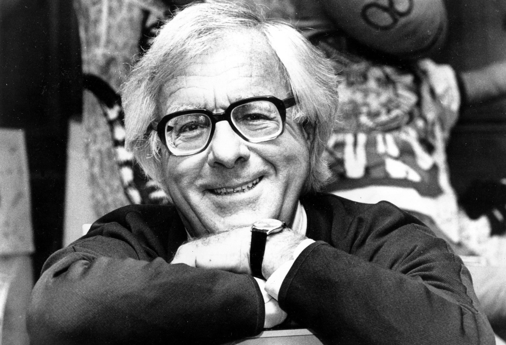
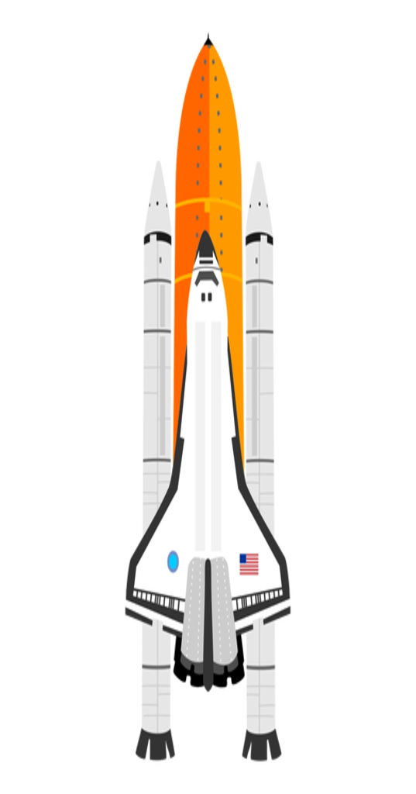
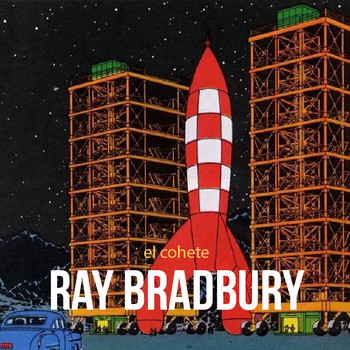
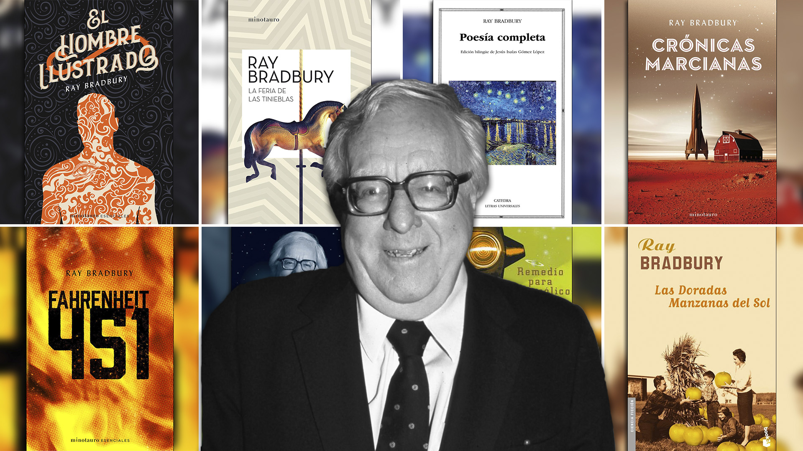
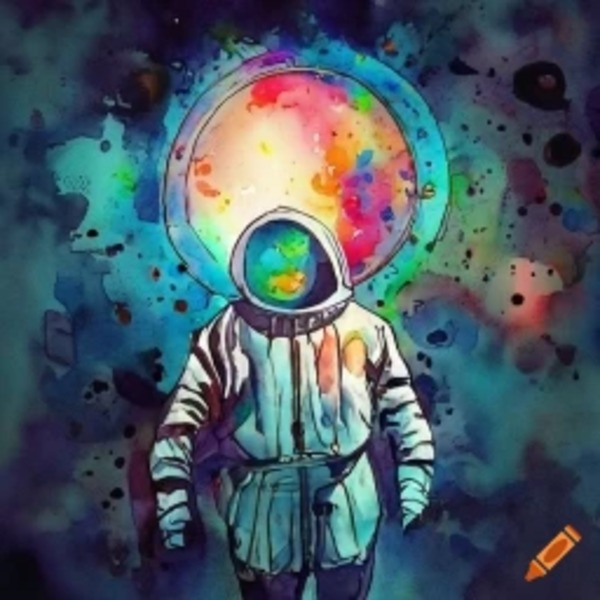

Resumen del cuento
Fiorello Bodoni, dueño de bajo recurso de un deshuesadero, que pasa sus noches admirando los lanzamientos cercanos de cohetes con destino a la Luna, Venus y Marte. Después de seis años, finalmente ha ahorrado el suficiente dinero como para enviar a uno de sus miembros de la familia a Marte. Sin embargo, cuando a Bodoni se le presenta la oportunidad a su esposa e hijos, pronto se dan cuenta de que ninguno podía soportar la culpabilidad de experimentar un maravilloso y semejante viaje mientras que el resto se queda. Bodoni vuelve abatido a su negocio, pero después de un golpe de suerte, se le ofrece la oportunidad de comprar una maqueta de un cohete.
Este decide gastar sus ahorros en la maqueta y secretamente pasa la noche construyendo la réplica del cohete con un teatro en la cabina, utilizando película de color, espejos y pantallas. A continuación le dice con entusiasmo a su familia que todos ellos serán capaces de hacer el viaje de ida y vuelta a Marte. A pesar de reticencias de su mujer, lleva a sus hijos en un convincente viaje hacia el espacio exterior, uno de ellos dice que lo van "recordar... para siempre."
Al final, su esposa se da cuenta de que es un recuerdo maravilloso que ha dado a sus hijos, a pesar de que el cohete nunca despegó el suelo, y se compromete a compartir un viaje corto en el cohete con él en el futuro..


Ray Bradbury
Ray Bradbury, fue un escritor estadounidense del género fantástico, terror y ciencia ficción. Principalmente conocido por su obra Crónicas marcianas y la novela distópica Fahrenheit 451.
Bradbury fue un ávido lector en su juventud además de un escritor aficionado. No pudo asistir a la universidad por razones económicas. Para ganarse la vida, comenzó a vender periódicos. Se formaría como escritor de manera autodidacta a través de libros, comenzando a escribir cuentos con una máquina de escribir.
Ray escribió cuentos y novelas de diversos géneros, desde el policial hasta el realista y costumbrista, pero se le conoce como un escritor clásico de la ciencia ficción y fantasía.
Otros libros

Carnaval Negro (Dark Carnival, 1947)
Las momias de Guanajuato (The Mummies of Guanajuato, 1947)
Crónicas marcianas (The Martian Chronicles, 1950)
El hombre ilustrado (The Illustrated Man, 1951)
Las doradas manzanas del Sol (The Golden Apples of the Sun, 1953)
El país de octubre (The october Country, 1955)
Remedio para melancólicos (A Medicine for Melancholy, 1959)
The Small Assassin (1962)
Cuentos del futuro (R is for Rocket, 1962)
Las maquinarias de la alegría (The Machineries of Joy, 1964)
The Autumn People (1965)
Tomorrow Midnight (1966)
Cuentos espaciales (S is for Space, 1966)
Twice 22 (1966)
Fantasmas de lo nuevo (I Sing the Body Electric, 1969)
Mucho después de medianoche (Long After Midnight, 1976)
The Fog Horn & Other Stories (1979)
One Timeless Spring (1980)
The Last Circus and the Electrocution (1980)
The Fog Horn and Other Stories (1981)
Cuentos de dinosaurios (Dinosaur Tales, 1983)
Memoria de crímenes (A Memory of Murder, 1984)
The Wonderful Death of Dudley Stone (1985)
El convector Toynbee, también En el expreso, al norte (The Toynbee Convector, 1988)
The Parrot Who Met Papa (1991)
Selected from Dark They Were, and Golden-Eyed (1991)
Más rápido que el ojo (Quicker Than The Eye, 1996)
Conduciendo a ciegas, también A ciegas (Driving Blind, 1997)
The Playground (2001)
Algo más en el equipaje (One More for the Road, 2002)
Is That You, Herb? (2003)
El signo del gato (The Cat's Pajamas: Stories, 2004)
A Sound of Thunder and Other Stories (2005)
The Dragon Who Ate His Tail (2007)
Ahora y siempre (Now and Forever, 2007)
Summer Morning, Summer Night (2007)
Siempre nos quedará París (We'll Always Have Paris: Stories, 2009)
El placer de quemar (A Pleasure To Burn, 2010)
Novelas
Fahrenheit 451 (1953)
El vino del estío (Dandelion Wine, 1957)
La feria de las tinieblas (Something Wicked this Way Comes, 1962)
El árbol de las brujas (The Halloween Tree, 1972)
La muerte es un asunto solitario (Death is a Lonely Business, 1985)
Cementerio para lunáticos (A Graveyard for lunatics, 1990)
Sombras verdes, ballena blanca (Green Shadows, White Whale, 1992)
De la ceniza volverás (From the Dust Returned, 2001)
Matemos todos a Constance (Let's All Kill Constance, 2002)
El verano de la despedida (Farewell Summer, 2006)
Proceso
Desde un principio sabiamos que, este ultimo trabajo reunia en gran parte, los contenidos claves de los anteriores tps.
Por esto nos dimos cuenta que laS dificultades las encontriamos en los errores apenas visibles, en los detalles. Como una llave sin cerrar o una Coma demas, o simplemente una imagen guardada como png en vez de jpg.
A pesar de todo esto y codeando hasta el ultimo momento pudimos resolver el trabajo y conseguir terminar la primera parte de este TPfinal.
Ahora nos encontramos en la segunda parte, en la WEB , deseando tambien que todo quede bien y asi subir este gran primer escalon de tecno 1.
